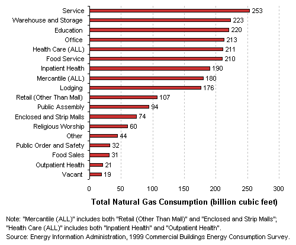
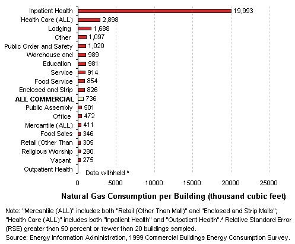
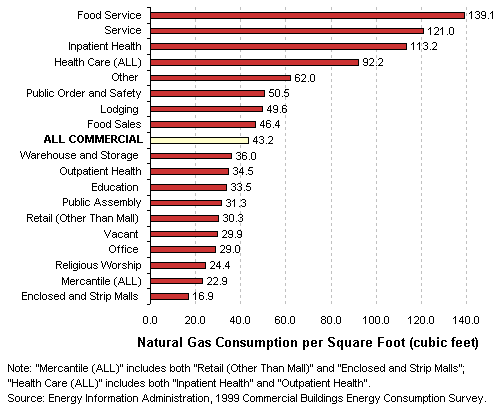

|
Compare Activities by ...
Natural Gas Use
Total
Natural Gas Consumption by Building Type
- Commercial buildings in the U.S. used a total of approximately
2.0 trillion cubic feet of natural gas in 1999.
- Natural gas use was not dominated by any single activity,
with seven activities each accounting for between 9 and 13 percent of
all commercial natural gas use.

Natural Gas
Consumption per Building by Building Type
- Inpatient health care buildings used by far the most natural gas per
building.

Natural Gas
Consumption per Square Foot by Building Type
- Food service, service, and inpatient health care buildings were the
most intensive users of natural gas.

Top
Specific questions may be directed to:
Joelle Michaels
joelle.michaels@eia.doe.gov
CBECS Manager
Release date: January 21, 2003
Page last modified:
May 4, 2009 2:50 PM
http://www.eia.gov/consumption/commercial/data/archive/cbecs/pba99/comparenatgasuse.html
If you are having any technical problems with this
site, please contact the EIA webmaster at wmaster@eia.doe.gov. |